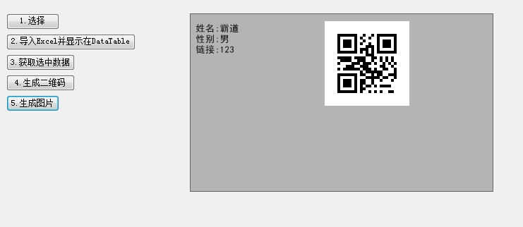

原文出处:本文由博客园博主霸道流氓提供。
原文连接:https://www.cnblogs.com/badaoliumangqizhi/p/11426919.html
原文连接:https://www.cnblogs.com/badaoliumangqizhi/p/11426919.html
场景
zxing.dll下载
https://download.csdn.net/download/badao_liumang_qizhi/11623214
效果

实现
根据上面文章中将简单的二维码生成后，现在要调整其布局。
拖拽一个按钮，双击进入其点击事件。
private void button6_Click(object sender, EventArgs e)
{
//二维码内容对象
AssetEntity assetEntity = new AssetEntity() { Name = "霸道",Gender = "男",Url = "123" };
//使用上面生成二维码的方法获取二维码的bitmap对象
Bitmap bitmap = ZxingHelper.CreateQRCode("霸道");
//重新绘制二维码布局
Image img = ZxingHelper.GetPrintPicture(bitmap, assetEntity,400,400);
//设置pictureBox的图片源
this.pictureBox1.Image = img;
}
这里新建了一个工具类ZxingHelper,调用其CreateQRCode方法返回生成二维码的Bitmap格式，然后调用其
GetPrintPicture获取调整布局后的照片。
在此之前，先新建一个存储打印内容的实体类AssetEntity
using System;
using System.Collections.Generic;
using System.Linq;
using System.Text;
using System.Threading.Tasks;
namespace NPOITest
{
class AssetEntity
{
private string name;
private string gender;
private string url;
public string Name { get => name; set => name = value; }
public string Gender { get => gender; set => gender = value; }
public string Url { get => url; set => url = value; }
}
}
然后在工具类中
using System;
using System.Collections.Generic;
using System.Drawing;
using System.Drawing.Drawing2D;
using System.Drawing.Printing;
using System.Linq;
using System.Text;
using System.Threading.Tasks;
using ZXing;
using ZXing.Common;
using ZXing.QrCode;
namespace NPOITest
{
class ZxingHelper
{
public static Bitmap CreateQRCode(string asset)
{
EncodingOptions options = new QrCodeEncodingOptions
{
DisableECI = true,
//编码
CharacterSet = "UTF-8",
//宽度
Width = 120,
//高度
Height = 120
};
BarcodeWriter writer = new BarcodeWriter();
writer.Format = BarcodeFormat.QR_CODE;
writer.Options = options;
return writer.Write(asset);
}
public static Image GetPrintPicture(Bitmap image, AssetEntity asset, int picWidth, int picHeight)
{
//新建Bitmap对象 用于返回 使用传递的参数作为宽度和高度
Bitmap printPicture = new Bitmap(picWidth, picHeight);
//高度
int height = 5;
//新建字体
Font font = new Font("黑体", 10f);
//Graphics :封装一个 GDI+ 绘图图面
//FromImage :从指定的 System.Drawing.Image 创建新的 System.Drawing.Graphics。
Graphics g = Graphics.FromImage(printPicture);
//Brush :定义用于填充图形形状（如矩形、椭圆、饼形、多边形和封闭路径）的内部的对象。
Brush brush = new SolidBrush(Color.Black);
//设置此 System.Drawing.Graphics 的呈现质量。
g.SmoothingMode = SmoothingMode.HighQuality;
//填加反锯齿代码效果
g.TextRenderingHint = System.Drawing.Text.TextRenderingHint.AntiAlias;
int interval = 15;
int pointX = 5;
//用指定的位置和大小初始化 System.Drawing.Rectangle 类的新实例。
Rectangle destRect = new Rectangle(190, 10, image.Width, image.Height);
//在指定位置并且按指定大小绘制指定的 System.Drawing.Image 的指定部分。
//GraphicsUnit.Pixel: 指定给定的数据的度量值的单位。
//DrawImage :在指定的位置并且按原始大小绘制指定的Image对象
g.DrawImage(image, destRect, 0, 0, image.Width, image.Height, GraphicsUnit.Pixel);
//
height += 8;
//用指定的位置和大小初始化 System.Drawing.RectangleF 类的新实例。
RectangleF layoutRectangle = new RectangleF(pointX, height, 260f, 85f);
//在指定矩形并且用指定的 System.Drawing.Brush 和 System.Drawing.Font 对象绘制指定的文本字符串
g.DrawString("姓名:" + asset.Name, font, brush, layoutRectangle);
height += interval;
layoutRectangle = new RectangleF(pointX, height, 230f, 85f);
g.DrawString("性别:" + asset.Gender, font, brush, layoutRectangle);
height += interval;
layoutRectangle = new RectangleF(pointX, height, 230f, 85f);
g.DrawString("链接:" + asset.Url, font, brush, layoutRectangle);
return printPicture;
}
}
}